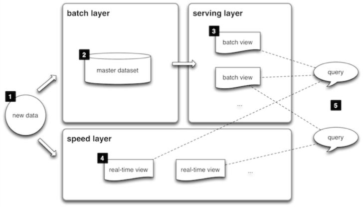

Data Engineering: A Brown Bag
Business up front,
Party in the back corner.
Let's ride the wave of data together...
Data Engineering vs. Analytics
This talk is about Data Engineering, not Analytics
So...what's the difference?

Data Engineering vs. Analytics
- Analytics: "I have this question about conversion rates..."
- Data Engineering: "That question does not come for free."
- Ok, what does that really mean, though?
- To the Chartio!
- *cough* We're hiring!
ETLs: How data gets done
Quite a lot goes on under the hood behind this statement:
track_event(current_user, :purchase, {
amount: subscription.price.to_f,
currency: subscription.currency,
country_code: Interpreter.detected_location.try(:country_code),
ip_address: request.remote_ip,
plan_name: subscription.plan.internal_name,
plan_set_id: current_user.plan_set.id,
referral_id: referral_from_cookie.try(:id),
region_name: Interpreter.detected_location.try(:region_name),
transaction_id: subscription.transactions.first.try(:id)
}.merge(additional_params))
But not all of what we do is event-based.
ETLs: How data gets done
There are a couple of different ways of reporting on data:
- Run queries against production or at least, a read slave.
- ROLAP
- MOLAP
- Some hybrid
- Either way, can be ETLed from a myriad of sources
ETLs: How data gets done
Types of ETLing we're doing:
-
Relational
- db2db (user_dimension)
- Report-based (ELTV population)
- Fancier (EmailUserTargeting)
-
Event stream
- EventE Server
- Cascalog
How many datums we got?
-
Relational
- Data Warehouse? 611GB
- Plus, we often have to hit all the other DBs.
- daily_lpis + daily_bpis =~ 1TB
-
Events
- 100GB/day
- ~30TB total
- Event/sec: 50% percentile: 700
- Event/sec: 95% percentile: 1150
- Event/sec: 99% percentile: 1200
- source
Where are we going?
...but what does this buy us?
QUERY ALL THE THINGS.
The Cool Shit: Cascalog
Ladies Love Cool Datums
(defn feed
[corpus & {:keys [tokenizer-fn phrase-split-fn]
:or {tokenizer-fn tokenize phrase-split-fn clojure.string/split-lines}}]
(let [phrases (phrase-split-fn corpus)]
(reduce merge-nested-maps (map textulate phrases))))
Look at that, you got your map AND your reduce!
And there are shitty parts: forward chaining
The Cool Shit: ...wait, wat.
What are other companies doing?
Big players tend to be Twitter, LinkedIn, Netflix
Other big players like Google often hoard knowledge
What are other companies doing?
Twitter: "Lambda Architecture"
What are other companies doing?
- Summingbird
-
Algebird
- Everything is a bird.
- Monoids!
What are other companies doing?
For Hive?
- ...Hive
- Parquet
- Shark
- Lots of newcomers
-
Plus..
- YARN
- Spark
- Mesos